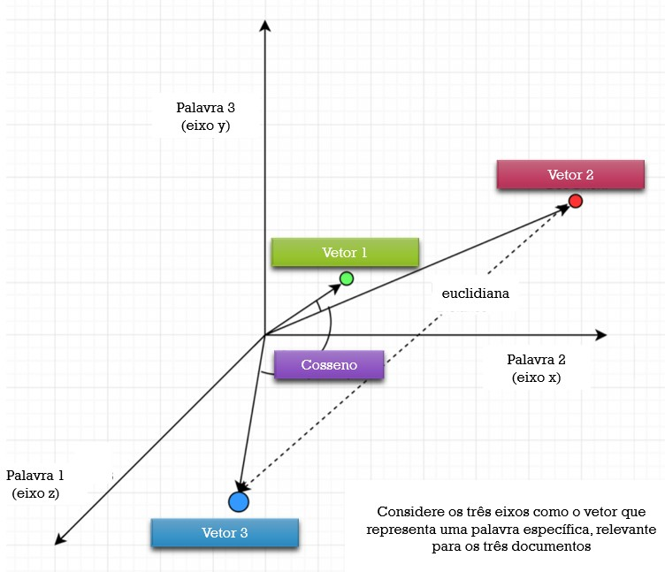
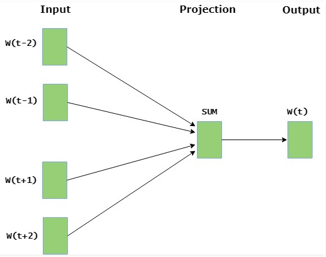
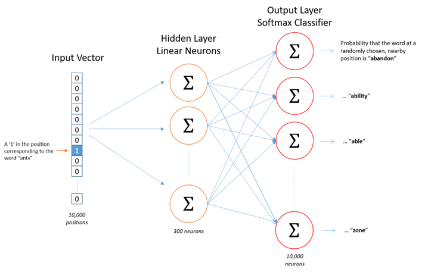

Frank Coelho de Alcantara -2020
Algoritmo de aprendizagem supervisionada para a vetorização criado em 2013.
Mikolov, Tomas; et al. (2013). "Efficient Estimation of Word Representations in Vector Space". arXiv:1301.3781.
Mikolov, Tomas (2013). "Distributed representations of words and phrases and their compositionality". Advances in Neural Information Processing Systems. arXiv:1310.4546.
O objetivo é criar vetores menos esparsos e mais uteis para descobrir a relação entre termos em documentos.
Já vimos que a vetorização cria matrizes que relacionam termos e documentos de uma forma esparsa.
Ainda que exista informação nesta representação, perdemos semântica e criamos grandes matrizes cheias de zeros.
Por outro lado, criamos vetores que representam documentos em um espaço multidimensional onde cada termo é uma dimensão.
Podemos ver a relação entre os vetores de cada documento usando a distância entre eles.
Dois documentos exatamente iguais terão o mesmo comprimento e o ângulo entre eles será zero. O ângulo é importante. Muito importante.
Métrica utilizada para determinar o grau de similaridade entre dois documentos independente dos seus tamanhos.
Mediremos o cosseno do ângulo entre dois vetores em um espaço multidimensional.
No nosso caso, dois vetores são estruturas de dados contendo informações sobre os dois documentos.
Cada termo corresponde a uma dimensão e a quantidade destes termos indica o escalar da dimensão. E podemos determinar a orientação do vetor que representa o texto.
Usando o cosseno entre os ângulos podemos criar uma medida de similaridade entre os vetores criados independente do comprimento destes vetores.
A Similaridade entre dois vetores, $A$ e $B$ será dada por: $$cos(\theta) = \frac{A\cdot B}{|A||B|} $$
Ou, considerando as múltiplas dimensões teremos: $$cos(\theta)= \frac{\sum_{i=1}^{n}A_i B_i}{\sqrt{\sum_{i=1}^{n}A_i} \sqrt{\sum_{i=1}^{n}A_i}}$$
O qué bastante simples usando o Numpy $$cos\_sim = np.dot(a, b)/(np.linalg.norm(a)*np.linalg.norm(b))$$
Word2Vector usa dois algoritmos para a criação do vetor: CBOW e SKIP-GRAM
CBOW Common Bag Of Words: considera o contexto de um determinado termo e tenta inferir que termo é este.
Funciona com a determinação de uma janela, um conjunto de palavras e dentro desta janela, centraliza a palavra desejada.
Trata-se de um algoritmo de aprendizagem supervisionada consistindo de uma rede neural com três camadas com apenas uma camada oculta.
Você pode ver uma implementação deste algoritmo em python, usando o Keras aqui!
SKIP-GRAM: partindo de um termo determinado o Skip-Gram tenta determinar os termos que rodeiam este termo.
Funciona com a determinação de uma janela, e vai criar os termos que estão dentro desta janela em torno do termo chave. É o processo inverso ao CBOW
Trata-se de um algoritmo de aprendizagem supervisionada consistindo de uma rede neural com três camadas com apenas uma camada oculta.
Você pode ver uma implementação deste algoritmo em python aqui!
o Word2Vector usa estes dois algoritmos com a intensão de criar um vetor a partir de um determinado corpus.
Tanto o CBOW quanto o SKIP-GRAM são usados apenas para descobrir as informações que criarão um vetor mais próximo de algum sentido semântico.
A dimensão do vetor é o número de features que temos na saída.
Esta imagem está disponível aqui!
Seu trabalho será, usando o Google Colab, determinar a similaridade, usando Cossine Similarity entre todos os documentos formados por um corpus de dois arquivos científicos, quaisquer, com mais de 15 páginas em PDF, escritos em inglês e convertidos para txt com a ferramenta que você desejar.
O resultado deve ser uma matriz relacionando estes parágrafos e a sua similaridade.
Este trabalho vale a presença para as aulas de 11 de novembro e 18 de novembro.
Seu trabalho será, usando o Google Colab, fazer uma implementação, from scratch do CBOW.
O resultado deve ser uma rede neural que, dado um conjunto de 4 palavras indique a palavra mais provável de estar exatamente no meio. Treine seu algoritmo com os textos do Machado de Assis disponíveis na NLTK
Este trabalho vale a presença para as aulas de 11 de novembro e 18 de novembro.
Seu trabalho será, usando o Google Colab, fazer uma implementação, from scratch do SKIP-GRAM.
O resultado deve ser uma rede neural que, dado um termo indique as quatro palavras mais prováveis de estar circundando este termo. Treine seu algoritmo com os textos do Machado de Assis disponíveis na NLTK
Este trabalho vale a presença para as aulas de 11 de novembro e 18 de novembro.
Chamamos de bag of words ou BOW por que o resultado não leva a sintaxe do corpus em consideração.
Só tem sentido se o corpus tiver várias sentenças.
Usa como base para a vetorização a frequência de ocorrência de lexemas em todo o corpus.
Chamaremos o corpus de lista de BOW e o resultado será uma matriz Termo-Documento.
Usaremos Termo em lugar de lexema e cada sentença do corpus será um documento.
Este é o primeiro passo, encontraremos a frequência de ocorrência de todos os termos existentes no corpus.
Faremos isso sem nenhuma técnica de redução de dimensionalidade, nada de stopwords, lemmatization ou stemming.
Considere o corpus:
Nosso vocabulário tem 12 termos $\{A, carteira, colocou, na, a, O, carteiro, \\ não, tem, comprou, uma, nova\}$
Temos um corpus composto de 3 documentos:
Nosso vocabulário tem 12 termos $\{A, carteira, colocou, na, a, O, carteiro, \\ não, tem, comprou, uma, nova\}$
Criamos um vetor para cada documento no corpus colocando a quantidade de vezes que uma palavra aparece no documento na posição que ela está no vocabulário.
Tente sozinho, no papel, com o corpus:
Encontre o vocabulário e defina o vetor para cada sentença.
Trata-se da matriz construída com todos os vetores dos documentos que compõem o corpus.
| Doc | A | carteira | colocou | na | a | O | carteiro | não | tem | comprou | uma | nova |
| $1$ | $1$ | $3$ | $1$ | $1$ | $1$ | $0$ | $0$ | $0$ | $0$ | $0$ | $0$ | $0$ |
| $2$ | $0$ | $1$ | $0$ | $0$ | $0$ | $1$ | $1$ | $1$ | $1$ | $0$ | $0$ | $0$ |
| $3$ | $0$ | $1$ | $0$ | $0$ | $0$ | $1$ | $1$ | $0$ | $0$ | $1$ | $1$ | $1$ |
A matriz gerada pelos $n$ documentos que compõem o corpus é, geralmente, esparsa e de alta dimensionalidade obedecendo a Lei de Zipf .
Um dos fatos mais interessantes no estudo da linguagem natural, e também um dos mais básicos é que os termos ocorrem, nas sentenças, seguindo uma distribuição de frequências sistemática, simples, de tal forma que existem poucos termos com alta frequência e estes constituem a maior parte dos termos em um corpus.
George Kingsley Zipf, em seu livro The psycho-biology of language: An introduction to dynamic philologyde 1999. percebeu que a enézima palvra mais frequente de um determinado texto tem uma frequência dada por $$f(n) \approx \frac{1}{n^\alpha}$$
Nesta equação o $n$ representa a colocação do termo na classificação dos termos em ordem de frequência, as maiores primeiro. Mandelbrot, em An informational theory of the statistical structure of language revisou esta fórmula e lhe deu a forma que usamos atualmente: $$f(n) \approx \frac{1}{(n+\beta)^\alpha}$$
Para $\alpha \approx 1$ e $\beta \approx 2.7$ esta fórmula parece ser verdadeira para todos os idiomas humanos e talvez seja uma característica da comunicação na nossa espécie.
Vocabulário: requer cuidado e atenção e frequentemente o uso de eliminação da pontuação, stopwords e adequação ao contexto.
Matriz Esparsa: difícil de modelar, pouca informação em muito espaço.
Significado: quando ignoramos a ordem das palavras perdemos o sentido do termo (bag of n-grams?)
Profissionalmente é raro ver o Bow, implementado com um algoritmo tão simples quanto o que vimos. Muitas vezes ele está agregado do TF-IDF
TF-IDF (Term Frequency – Inverse Document Frequency) é usado para medir a importância de um termo em um documento presente em uma coleção de documentos. O valor TF-IDF de uma palavra aumenta proporcionalmente à medida que aumenta o número de ocorrências dela em um documento. Porém, este valor é relativizado pela frequência da palavra no corpus. Resumindo:
Quanto mais frequentemente um termo ocorre em um documento, mais representativo ele é para o conteúdo, e em quanto mais documentos o termo ocorre, menos discriminativo ele é.
Para entender este algoritmo vamos usar o seguinte corpus:
Que resulta na seguinte matriz:
| Doc | A | carteira | colocou | na | a | O | carteiro | não | tem | comprou | uma | nova |
| $1$ | $1$ | $3$ | $1$ | $1$ | $1$ | $0$ | $0$ | $0$ | $0$ | $0$ | $0$ | $0$ |
| $2$ | $0$ | $1$ | $0$ | $0$ | $0$ | $1$ | $1$ | $1$ | $1$ | $0$ | $0$ | $0$ |
| $3$ | $0$ | $1$ | $0$ | $0$ | $0$ | $1$ | $1$ | $0$ | $0$ | $1$ | $1$ | $1$ |
A Frequência de um Termo (TF): fornece a frequência de cada termo em um documento do corpus. e pode ser calculada por: $$tf_{i,j} = \frac{n_{i,j}}{\Sigma_k n_{i,j}}$$
Onde $n_{i,j}$, representa a frequência de um lexema $i$ em um documento $j$. De uma forma mais simples podemos dizer que para um determinado termo $t$, de um documento $d$ seu $tf$ será dado por: $$tf_{(t,d)} = \frac{quantidade\_de\_t\_em\_d}{numero\_de\_termos\_em\_d}$$
Dado o seguinte corpus:
Que resulta na seguinte matriz:
| Doc | Termos | A | carteira | colocou | na | a | O | carteiro | não | tem | comprou | uma | nova |
| $1$ | $7$ | $1/7 \\ = 0,14$ | $3/7 \\ = 0,43$ | $1/7 \\ = 0,14$ | $1/7 \\ = 0,14$ | $1/7 \\ = 0,14$ | $0$ | $0$ | $0$ | $0$ | $0$ | $0$ | $0$ |
| $2$ | $5$ | $0$ | $1/5 \\ = 0,2$ | $0$ | $0$ | $0$ | $1/5 \\ = 0,2$ | $1/5 \\ = 0,2$ | $1/5 \\ = 0,2$ | $1/5 \\ = 0,2$ | $0$ | $0$ | $0$ |
| $3$ | $6$ | $0$ | $1/6 \\ = 0,17$ | $0$ | $0$ | $0$ | $1/6 \\ = 0,17$ | $1/6 \\ = 0,17$ | $0$ | $0$ | $1/6 \\ = 0,17$ | $1/6 \\ = 0,17$ | $1/6 \\ = 0,17$ |
Cálculo do IDF (Inverse Document Frequency): permite computar o peso de cada palavra na coleção de documentos. Palavras que ocorrem mais raramente tem maior IDF: $$idf_{(t)} = log(\frac{N}{df_t +1})$$
Para o nosso caso teremos:
| A | carteira | colocou | na | a | O |
| $log(3/(1+1)) = 0,18$ | $log(3/(5+1))) = 1,23$ | $log(3/(1+1)) = 0,18$ | $log(3/(1+1)) = 0,18$ | $log(3/(2+1)) = 0$ | $log(3/(2+1)) = 0$ |
| carteiro | não | tem | comprou | uma | nova |
| $log(3/(1+1)) = 0,18$ | $log(3/(1+1)) = 0,18$ | $log(3/(1+1)) = 0,18$ | $log(3/(1+1)) = 0,18$ | $log(3/(1+1)) = 0,18$ | $log(3/(1+1)) = 0,18$ |
A fórmula final é o produto das duas fórmulas anteriores $$tfidf_{(i,j)} =\frac{n_{i,j}}{\Sigma_k n_{i,j}} \times log(\frac{N}{df_t +1})$$
Que calculará o TF-IDF o termo $i$ para o documento $j$.
O resultado desta operação, sobre nosso corpus de exemplo pode ser visto no próximo slide.
| Doc | A | carteira | colocou | na | a | O |
| $1$ | $0,14 * 0,18 = 0,03$ | $0,43 * 1,23 = 0,53$ | $0,14 * 0,18 = 0,03$ | $0,14 * 0,18 = 0,03$ | $0,14 * 0 = 0$ | $0 * 0 = 0$ |
| $2$ | $0 * 0,18 = 0$ | $0,2 * 1,23 = 2,5$ | $0 * 0,18 = 0$ | $0 * 0,18 = 0$ | $0 * 0 = 0$ | $0,2 * 0 = 0$ |
| $3$ | $0 * 0,18 = 0$ | $0,17 * 1,23 = 0,21$ | $0 * 0,18 = 0$ | $0 * 0,18 = 0$ | $0 * 0 = 0$ | $0,17 * 0 = 0$ |
| Doc | carteiro | não | tem | comprou | uma | nova |
| $1$ | $0 * 0 = 0$ | $0 * 0,18 = 0$ | $0 * 0,18 = 0$ | $0 * 0,18 = 0$ | $0 * 0,18 = 0$ | $0 * 0,18 = 0$ |
| $2$ | $0,2 * 0,18 = 0,04$ | $0,2 * 0,18 = 0,04$ | $0,2 * 0,18 = 0,04$ | $0 * 0,18 = 0$ | $0 * 0,18 = 0$ | $0 * 0,18 = 0$ |
| $3$ | $0,17 * 0,18 = 0,31$ | $0 * 0,18 = 0$ | $0 * 0,18 = 0$ | $0,17 * 0,18 = 0,31$ | $0,17 * 0,18 = 0,31$ | $0,17 * 0,18 = 0,31$ |